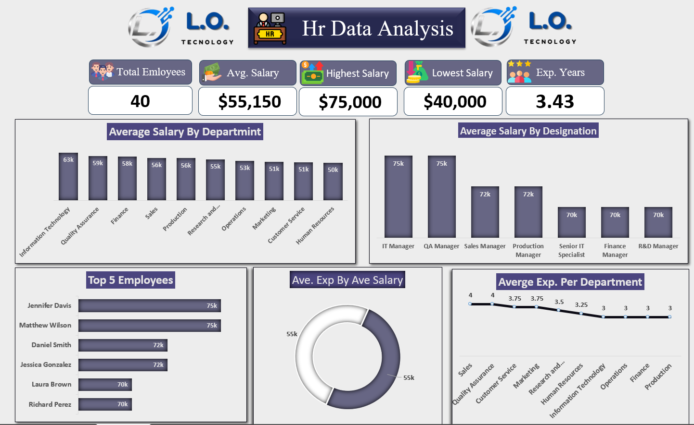

L.O. Technology HR Data Analysis
Analyzed employee salary and experience data to identify compensation patterns, departmental differences, and workforce trends.
Key KPIs: 40 Employees | Avg. Salary $55,150 | Salary Range $40,000–$75,000 | Avg. Experience 3.43 Years
Key Insights: Identified salary variations by department and designation, top-paid employees, and experience patterns across departments.
Recommendations: Review compensation gaps and use salary-experience trends to support workforce planning and HR decisions.
View Project